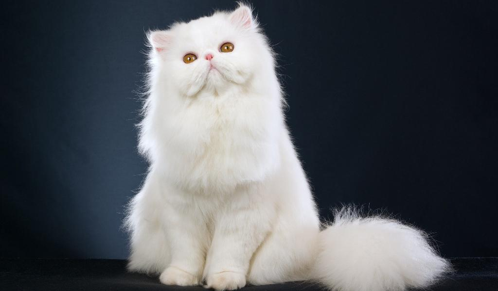
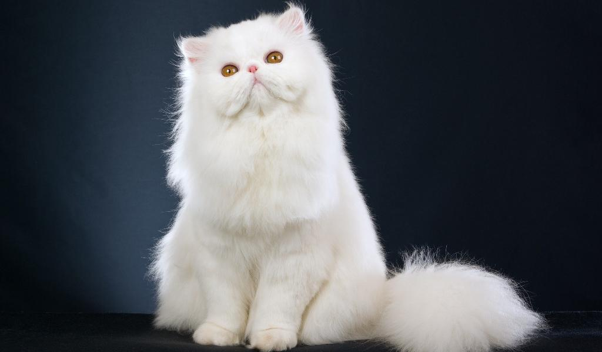
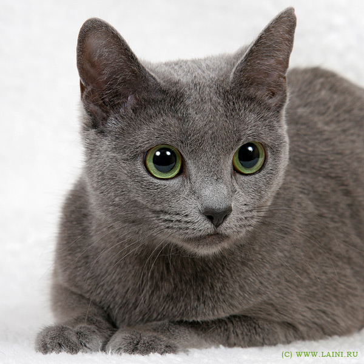
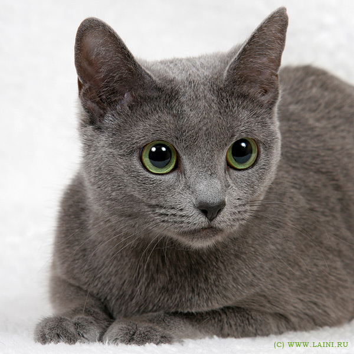
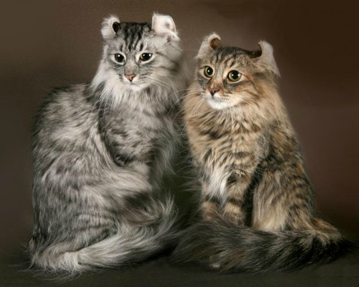

По сложности в уходе
Кошки, не требующие специального ухода
Если вы не желаете проводить вечера за вычесыванием шерсти или обдумыванием меню своего любимчика, обратите внимание на следующие породы:

Это сокращенный список, однако самые простые в уходе кошки — короткошерстные без причуд во внешности.
Длинношерстные кошки часто линяют и требуют тщательного ухода за шерсткой, а бесшерстные — мерзнут и потеют. Питомцы с короткой шерстью — отличный выбор для занятого хозяина.
Сложные в содержании породы
Вы — страстный любитель котиков и готовы посвятить немалую долю времени заботе за любимцем? Тогда присмотритесь к таким породам:
 


Сфинксы — мерзнущие котики, желающие постоянного тепла и заботы. Персидская кошка сложна своей рекордной длиной шерсти, которая постоянно спутывается в колтуны. Кроме того, у персов плоская мордочка, из-за которой они могут часто болеть.
Непросто ухаживать за кошками с необычными ушками: шотландскими вислоухими или американскими кёрлами. Также к кошкам со сложным уходом можно причислить все длинношерстные породы.
Выбор по характеру
Общительные и разговорчивые
Общаться со своей кошкой — приятное занятие, которое с радостью разделят с хозяином разговорчивые питомцы. Если вам хочется каждый день обсуждать с кошкой погоду, подойдут такие породы:
Общительные породы кошек души не чаят в философских разговорах с хозяином. Не выбирайте такую породу, если цените тишину в своем доме.
Молчаливые кошки
Мяуканье может и раздражать хозяина кошки. Если вы предпочитаете не слышать лишних звуков,выбирайте из этих пород:

Молчаливые кошки не докучают, и вы сохраните спокойствие своего дома. Представители этих пород будут мяукать только по важному поводу.
Активные и энергичные
За деятельными кошками интересно наблюдать: сегодня питомцу захотелось исследовать шкаф, а завтра он станет космонавтом! Вот такие кошки любят активность:

Хозяевам энергичных пород кошек придется постоянно придумывать, чем занять своего питомца. Но это того стоит! Они будут с удовольствием решать ваши головоломки и ждать следующих.
Кошки-лежебоки
Есть кошки, которым не нравится бегать по хозяйским полкам. Можно ведь хорошо покушать, а потом хорошо поспать! Следующие породы — настоящие ленивки:
 

Ленивые породы кошек — хороший выбор для флегматичных людей. Кошки-лежебоки бывают настолько незаметными, что о существовании кота в доме намекает только регулярно пустеющая миска.
Ласковые и добрые
Люди заводят кошек, чтобы гладить их и любить! Ласковые породы сами приходят обниматься и целоваться, поэтому подойдут любвеобильным хозяевам:
Такие породы неохотно слезают с хозяина: им не нравится расставаться с любимым другом! Выбирайте ласковую породу кошек, если готовы уделить ей достаточно внимания.
Умные породы кошек
С интеллектуальными питомцами интересно общаться: они понимают речь, легко учат команды и становятся настоящим другом. К умным породам кошек относятся:

Такие кошки поддаются дрессировке: учатся приносить мячик, выполнять действия, танцевать и ходить на поводке. Кошки с высоким интеллектом — выбор людей, которые не хотят заводить собаку.
По вашему образу жизни
Для занятых людей
Если хозяин редко бывает дома, ему необходима кошка, которая не требует много общения и заботы. Такой питомец должен иметь самодостаточный характер. Посмотрите на следующие породы кошек, если вы считаете себя трудоголиком:
Такие кошки будут радостно встречать хозяина с работы, но не будут докучать, если он не в настроении. Эти питомцы не требуют сложного ухода и всегда сами найдут, чем заняться.
Для детей
Если ребенок просит купить котенка, выбирайте из добрых пород кошек. Питомец должен быть терпеливым, чтобы не злиться от шалостей. Породы, которые будут получать удовольствие от детских игр:
Одиноким людям
Людям, живущим в одиночестве, часто не хватает общения. Такому человеку стоит выбрать кошку с привязчивым характером. Преданные кошки с удовольствием будут скрашивать вечера своим мурлыканьем:

В частный дом
Человеку, живущему в собственном доме, необходим кот-охотник. Питомец должен уметь истреблять грызунов и гулять во дворе самостоятельно. Если вашему дому необходим крысолов, присмотритесь к следующим породам:
Прирожденные крысоловы будут всегда стоять на страже дома хозяина. Для ловли крыс лучше выбирать именно кошку, а не кота: они показывают наилучшие охотничьи качества.
Как второй питомец
Одного питомца в доме бывает недостаточно — любви хватит на всех! Чтобы общение между старым и новым питомцем заладилось, выбирайте из дружелюбных пород кошек:
Необычные породы кошек
Для вас кошка — не только питомец, но и способ самовыражения? Присмотритесь к необычным породам кошек. Вот уж где стоит выбирать на свой вкус!